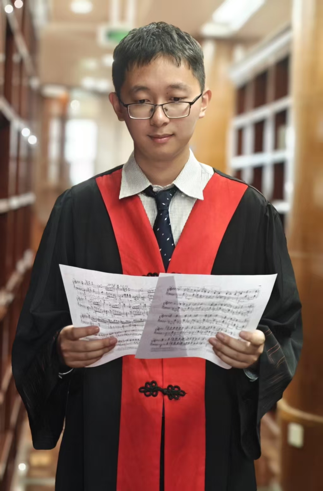

Beichen ZhangPh.D. Student
MMLab, The Chinese University of Hong Kong Email: 1155255437@link.cuhk.edu.hk WeChat: wxid_imfjl96hbv2v227 |
 |
Biography
I am a 1st year Ph.D. student at MMLab, The Chinese University of Hong Kong, supervised by Prof. Dahua Lin. Prior to this, I received my B.E. degree in Artificial Intelligence from Shanghai Jiao Tong University in 2025.
My research centers on advancing Complex Reasoning capabilities in Multi-Modal Large Language Models, encompassing core aspects such as Abstract Reasoning, Spatial Intelligence, and Fine-grained Perception.
Please feel free to contact me if you're interested in relevant research or would like to discuss potential collaborations!
News
- [02/2026] Our ARC-VL and Spatial-SSRL were accepted by CVPR 2026.
- [09/2025] Start the PhD journey at MMLab, CUHK.
- [06/2025] Receive B.E. degree from Shanghai Jiao Tong University.
Publications [Full list: Google Scholar]
( * equal contribution, † corresponding authors )(Co-) First Author Publications
-
Think Visually, Reason Textually: Vision-Language Synergy in ARC
Beichen Zhang, Yuhang Zang†, Xiaoyi Dong, Yuhang Cao, Haodong Duan, Dahua Lin†, Jiaqi Wang†
CVPR 2026 | Paper | Code | -
Long-CLIP: Unlocking the Long-Text Capability of CLIP
Beichen Zhang, Pan Zhang, Xiaoyi Dong†, Yuhang Zang, Jiaqi Wang†
ECCV 2024 | Paper | Code | -
Boosting Order-Preserving and Transferability for Neural Architecture Search: a Joint Architecture Refined Search and Fine-tuning Approach
Beichen Zhang, Xiaoxing Wang, Xiaohan Qin, Junchi Yan†
CVPR 2024 | Paper | Code | -
BoostStep: Boosting Mathematical Capability of Large Language Models via Improved Single-step Reasoning
Beichen Zhang*, Yuhong Liu*, Xiaoyi Dong†, Yuhang Zang, Pan Zhang, Yuhang Cao, Haodong Duan, Yuhang Cao, Dahua Lin, Jiaqi Wang†
Arxiv 2025 | Paper | Code |
Co-Author Publications
-
Spatial-SSRL: Enhancing Spatial Understanding via Self-Supervised Reinforcement Learning
Yuhong Liu, Beichen Zhang, Yuhang Zang, Yuhang Cao, Long Xing, Xiaoyi Dong, Haodong Duan, Dahua Lin, Jiaqi Wang
CVPR 2026 | Paper | Code |
Experiences
 |
Shanghai AI Laboratory
Research Intern Topic: Multi-Modal Large Language Models Mentor: Dr. Jiaqi Wang & Dr. Xiaoyi Dong & Dr. Yuhang Zang |
Shanghai, China
Aug, 2024 - |
Academic services
- Conference Reviewer: CVPR 2026, ECCV 2026
- Journal Reviewer: TMLR, TNNLS